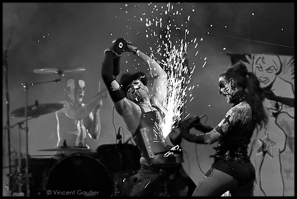
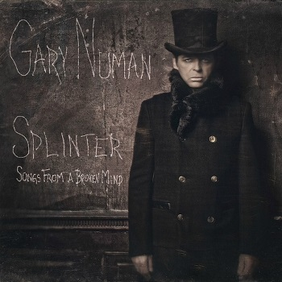
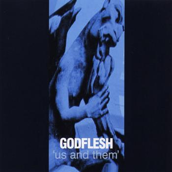
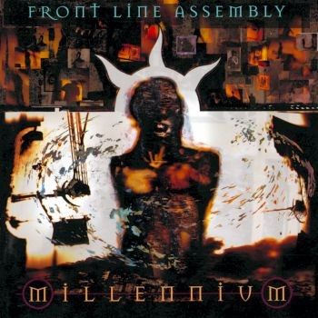
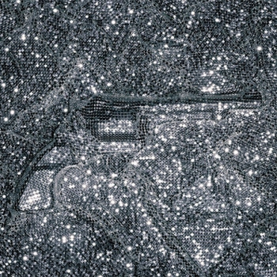
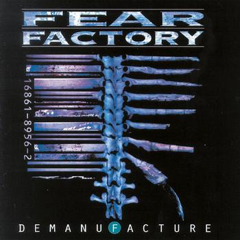

20. Gary Numan – Splinter (Songs from a broken mind) (2013)

Hablar de Gary Numan es hacerlo de uno de los padres espirituales del rock industrial. Trent Reznor, Marilyn Manson, Foo Fighters o Fear Factory le reivindicaron en los 90 con sendas versiones. Fue por aquellos años cuando el profesor decidió aprender de sus alumnos, sobre todo del primero de la lista, para reinventarse tras una travesía por el desierto durante la década de los 80. Splinter es el disco de Nine Inch Nails que Nine Inch Nails ya nunca publicará, un trabajo impecable de l’enfant terrible de los sintetizadores, y probablemente el último gran disco del rock industrial que escucharán nuestros oídos en mucho, mucho tiempo.
19. Sulpher – Spray (2002)
Sulpher fueron la gran esperanza británica del rock industrial, así suena la frase de estrambótica. Pegaron fuerte con este debut, un trabajo que era el A-B-C del género: sólido, potente, repleto de buenos riffs y texturas, e inspirándose sin pudor alguno en los Nine Inch Nails más noventeros. Esa misma fuente de inspiración les supuso una buena lluvia de críticas, pero eso no quita que Spray sea de lo mejor publicado en esa época y un excelente disco cuyo sucesor lleva en la parrilla de salida desde 2005, lo que ya le ha valido el sobrenombre de ‘El Chinese Democracy del Rock Industrial’.
18. Cubanate – Antimatter (1995)
Cubanate son el perfecto ejemplo de lo que fueron los años en los que el rock industrial se expandía buscando nuevas sonoridades que absorber. Mientras unos tiraban por sonar más NIN, Ministry o incluso buscaban una comercialidad mal entendida, ellos apostaron por una frenética fusión entre el techno más machacón y las guitarras más distorsionadas. Antimatter es una patada en el hígado y una ingesta masiva de drogas sintéticas en formato de píldoras bailables. Y Body Burn uno de sus himnos definitivos.
17. Godflesh – Us and Them (1999)

Godflesh llevaban diez años de carrera cuando publicaron Us And Them. Justin Broadrick ya empezaba a estar cansado de Godflesh como banda afincada en ese jardín llamado Metal Industrial, y con este disco decidió ampliar la parcela buscando nuevos horizontes. Esto significa que las opresivas atmósferas y los densos riffs de sus trabajos anteriores dejan paso a una filiación más acusada al ruidismo y al Drum’n Bass. El resultado es un álbum dónde el esqueleto de las canciones sigue manteniéndose inalterable pero cuyo envoltorio, novedoso y fresco, permite un acercamiento distinto al alma de Godflesh.
16. Sonic Violence – Jagd (1990)
He aquí una de las joyas ocultas del Metal Industrial. Sonic Violence debutaron en 1990 con Jagd, poco después de que Godflesh hicieran lo propio. Y sí, los también británicos se dan un aire, pero sólo un poco: mucho más macarras y punkis, desechando desde el principio el uso de una caja de ritmos a favor de una batería real, y con momentos tan sucios que casi suenan crust, Jagd es lacerante, muy bruto, y sobre todo, una cerdada en toda regla. Una delicatessen para amantes de lo extremo.
15. Atari Teenage Riot – Is This Hyperreal? (2011)
¿Cómo encajar un grupo tan alejado del rock y metal en una lista con ‘rock/metal’ en su nombre? La ensalada de samplers, drum’n bass, jungle y techno de los germanos es una manera muy poco ortodoxa de hacer rock, cierto. Pero el enfoque que le dan esa amalgama de sonidos, como si de un choque entre Slayer y una fiesta rave se tratara, justifica su aparición en la lista. Is This Hyperreal? significó su retorno tras diez años de paro y demostró que hoy más que nunca, su combatividad, su actitud y su visión del mundo está mucho más vigente que cuando debutaron hace veinte años.
14. Front Line Assembly – Millenium (1994)

Front Line Assembly y Skinny Puppy son quizás los grupos más representativos de la electrónica industrial (Los dos son canadienses y comparten un pasado común, pero eso es otra historia). Ambos grupos tuvieron su acercamiento a sonidos más orgánicos, y en el caso de FLA, fue por partida doble: Millennium y Hard Wired fueron los discos con los que incluyeron las guitarras como un elemento clave. Ambos son tremendos, pero me quedo con Millenium ya que lo mismo te incluía riffs sacados directamente de Pantera o Sepultura, como te soltaba unos tremendos delirios electrónicos anunciado un apocalipsis inminente.
13. The Young Gods – Super Ready / Fragmenté (2007)

¿Os habéis preguntado alguna como sería que The Doors sonaran como una banda de rock industrial? Supongo que la respuesta es ‘no’, pero el caso es que The Young Gods se sacaron de la manga en 2007 un disco en el que por primera vez en toda su carrera, usaban instrumentos reales para tocar. Y dio como resultado un álbum de acusadísima personalidad que no duda en arrimarse al blues, de tal modo que es como si el espíritu de The Doors anduviera flotando entre los suizos durante las sesiones de grabación.
12. Fear Factory – Demanufacture (1995)

Si Streetcleaner fue el disco que dio nombre al Metal Industrial, Demanufacture fue el que le brindó la fama. Fear Factory fueron los más listos de la clase y encontraron un filón aliándose con Rhys Fulber (entonces aún en Front Line Assembly) como productor y miembro en la sombra. Del Death Metal de Soul Of A New Machine pasaron a un Metal Industrial de corte moderno, agresivo y preciso como un reloj atómico, apoyado en una base rítimica tremendamente sólida, unos riffs imparables, un cantante en estado de gracia y unas atmósferas embebidas de teconología y ciencia ficción.
11. White Zombie – Astro-Creep: 2000 – Songs of Love, Destruction, and Other Synthetic Delusions of the Electric Head (1995)
Si White Zombie no hubieran existido alguien hubiera tenido que inventarlos. No se casaban con nadie y su inspiración era tan evidente como variada. Astro-Creep 2000 es su trabajo más logrado, precisamente por la acusada personalidad del grupo. Nunca antes nadie había mezclado, y con tanto desparpajo, el amor por el terror de serie B, el groove del rock setentero, y el rock/metal alternativo de esos años. Quizás incluirlos en una lista de este tipo es algo aventurado, pero su influencia en el rock industrial de esos años (y posteriores) es algo más que obvio.
Apoyános